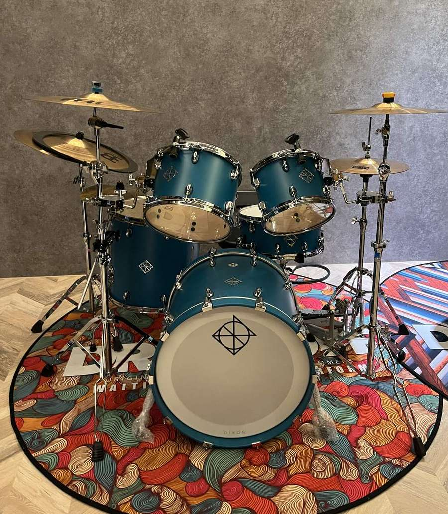
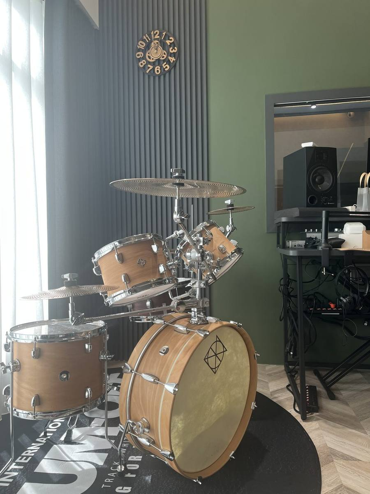
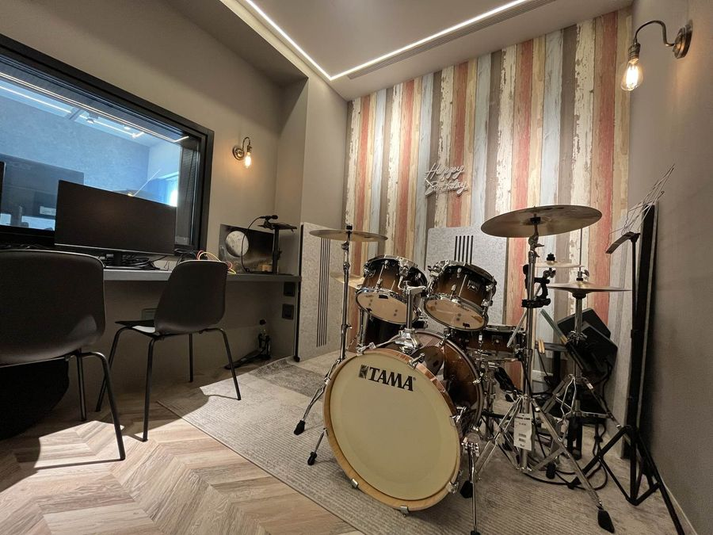
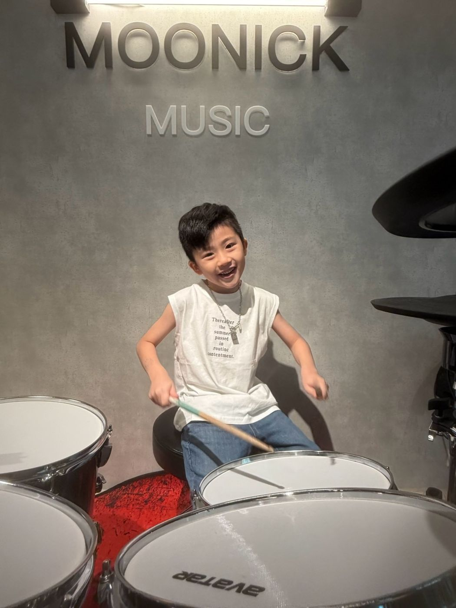
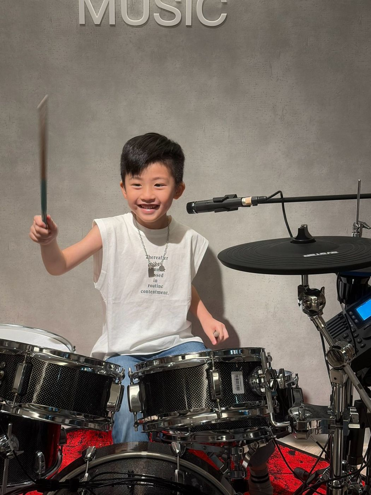
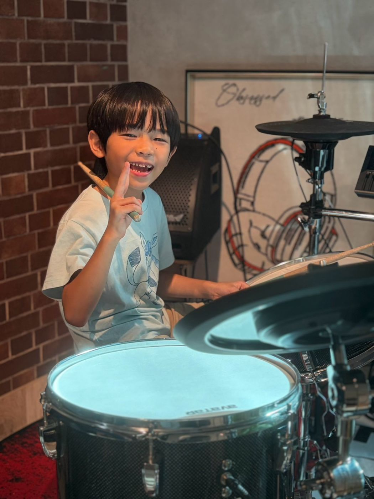
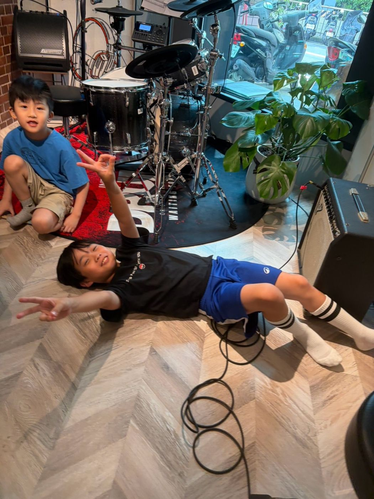
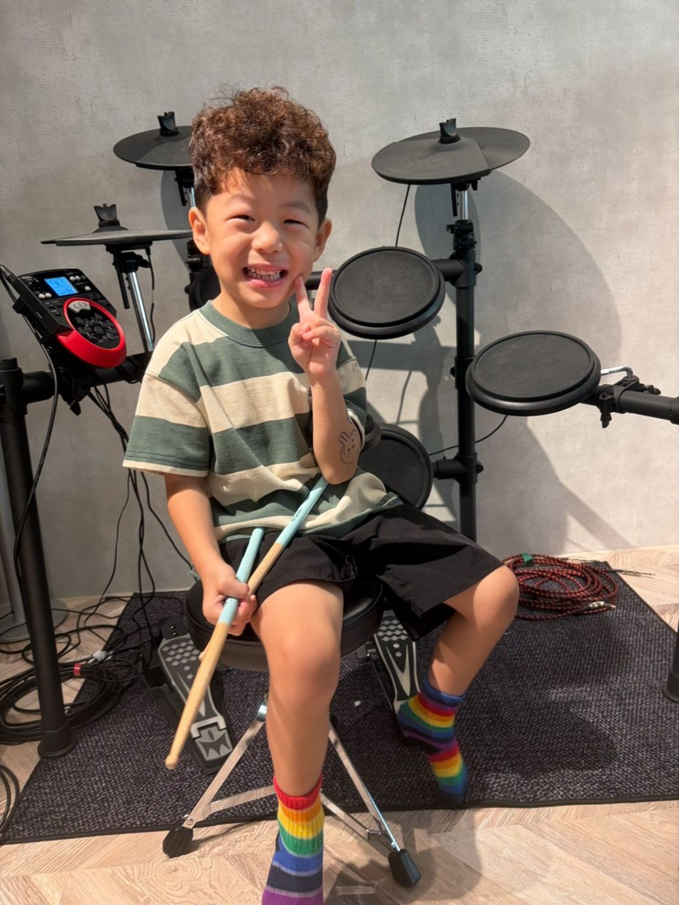
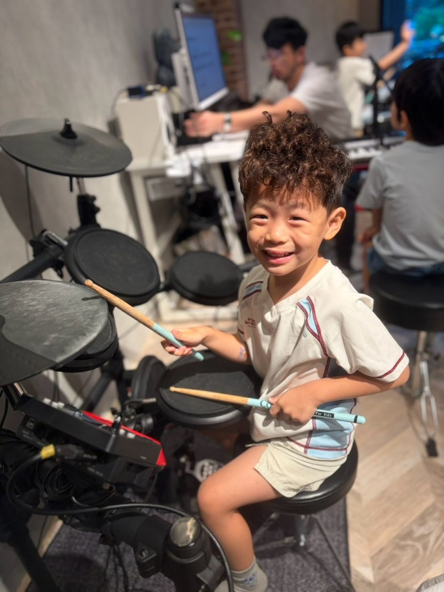
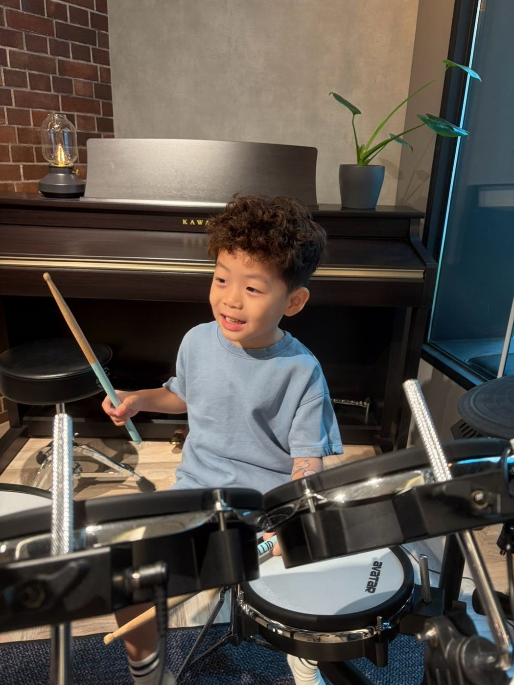

板橋爵士鼓課｜小孩、大人都能學，在隔音鼓房打真鼓
學爵士鼓最怕一直敲練習板、摸不到真鼓！慕尼克音樂板橋校區（國光國小正對面）設有獨立隔音鼓房與配置三組真鼓的團班教室，上課直接使用真的爵士鼓。兒童、成人都可以學，從握棒、基本打點與穩定拍子開始，再跟著常聽的流行歌打鼓。有個人班與團體班，一堂課 50 分鐘，一期 12 堂。
在板橋隔音鼓房上真鼓
板橋校區的獨立隔音鼓房配置 TAMA 20 吋爵士鼓（平時亦開放按小時租借練習），團班教室也擺放了三組實體真鼓與兩組輔助練習用電子鼓。孩子與大人上課敲得到真鼓的力道、反彈與銅鈸音色變化，也更容易聽出自己哪裡打得穩、哪裡需要再調整。

小孩幾歲可以學爵士鼓？
我們不只看年紀，更看孩子準備好了沒：能數到 10 並拍出指定次數、分得清左右手、聽得懂簡單的兩步驟組合指令（通常約 3～4 歲以上），就可以開始上課。鼓椅和小鼓架可以配合孩子身高調整。不確定的話，可以先用這份檢查表在家試試看：孩子幾歲可以學爵士鼓？在家 5 分鐘就能做的準備度檢查表。大人與樂齡學員完全零基礎也沒關係，老師會從最放鬆的握棒與基礎節奏帶起。
爵士鼓課會學什麼？
- 正確握棒與基本打點發力
- 穩定拍子、認識流行歌常用的基礎節奏型
- 訓練雙手雙腳獨立協調與專注力
- 跟著喜歡的流行歌完整打完一首歌
教學進度會依每個人的程度安排，先把拍子打穩，再一首一首完成喜歡的歌。
個人班和團體班
個人班是一對一上課，進度依個人目標安排，排課時間較彈性。團體班在配置三組真鼓的團班教室上課，和同伴一起打鼓、互相激勵；團體班依報名狀況開班，最新時段請在官方 LINE 詢問。一堂課 50 分鐘，一期 12 堂。依規定請假，一期可以補課 3 次。預約時段請打手機 0939-239-219、市話 02-8965-2288，或加官方 LINE 詢問。非營業時間或老師帶學生演出時，市話可能無人接聽，請改撥手機。
住公寓回家怎麼練？
家裡如果能放一套鼓當然好；住在公寓大樓、空間或音量有限時，只要準備「手跟腳的打點練習板」加上「一顆聽得見低頻的實體喇叭」就能在家練習。打點板敲起來有反彈回饋感，練起來才接近真鼓；每週挑一天用手機錄下 1 分鐘練習影片傳給老師，老師就能看出下一步要調整哪裡。詳細做法請看：住板橋公寓也能練鼓嗎？三樣東西佈置孩子的家庭練習角。
跟樂團一起打，也有機會站上舞台
鼓是整個樂團的心跳。當基本拍子打穩之後，可以加入板橋樂團班，和吉他、Bass、鍵盤與主唱一起合奏。板橋校區的大廳打通後就是寬敞的練團大廳，並會舉辦成果發表讓學員上台演出；想帶孩子參加全國爵士鼓比賽，可以先讀這篇：孩子要上台比賽了：比賽前一晚、上台前、回家路上，爸媽可以說的話。
爵士鼓由負責人小江老師（江孟翰）、小佑老師（陳諺群）與職業鼓手安安老師（張妤安）共同指導。樂團合奏由慕尼克負責人小江老師（江孟翰）親自帶領。團隊已指導學生奪下 30 座全國比賽冠軍與 7 位英國 Rockschool Grade 8 最高階檢定通過；小江老師本身更是累積超過 200 首作品的音樂製作人，能將鼓點與各樂器重新編曲整合，讓孩子真正聽懂鼓在整首歌裡的角色。看比賽與檢定紀錄。
親子樂團：孩子打鼓，爸媽一起上場
慕尼克設有親子樂團，爸爸、媽媽可以和孩子編在同一個樂團裡演奏。孩子負責打爵士鼓，爸媽也能拿起吉他、Bass、彈鍵盤或當主唱一起合奏。參加方式請在官方 LINE 詢問。
鼓房環境



上課照片







上課地點與時間
地址：新北市板橋區中正路325巷47號1樓（國光國小正對面）
營業時間：週三、五 16:30–22:00；週四 14:00–22:00；週六、日 13:00–22:00；週一、二公休
交通：公車「307」，「港尾」站下車，走約 3 分鐘。捷運板橋站約 1.1 公里，出站騎 YouBike 約 5–7 分鐘。
停車：Times 中正路停車場走路約 2 分鐘，國光公園日月亭停車場走路約 4 分鐘。
也有板橋吉他課、板橋鋼琴課、板橋樂團班，以及板橋 Bass 課、板橋歌唱課。
常見問題
3、4 歲可以學爵士鼓嗎？
可以先用在家檢查表看看：能數到 10 並拍出指定次數、分得清左右手、聽得懂簡單組合指令，就可以開始。鼓椅和小鼓架可以配合孩子身高調整。不確定的話，加入官方 LINE，我們幫你看孩子適合從哪裡開始。
完全沒基礎可以學爵士鼓嗎？
可以。兒童、成人與樂齡都能上課，老師會從握棒和基本打點開始，依程度安排內容。
家裡一定要有鼓嗎？
不一定。在家只要準備手跟腳的打點練習板與實體喇叭把動作順序練熟，每週來教室隔音鼓房用真鼓打出音色與力道即可。
爵士鼓課一堂多久？怎麼報名？
一堂課 50 分鐘，一期 12 堂。最新排課時段與報名方式，請撥打手機 0939-239-219、市話 02-8965-2288，或加官方 LINE 詢問。非營業時間或老師帶學生演出時，市話可能無人接聽，請改撥手機。
爸媽也可以加入孩子的樂團嗎？
可以。慕尼克有親子樂團，爸爸、媽媽可以和孩子在同一個樂團裡一起演奏。參加方式與時段請在官方 LINE 詢問。
請假可以補課嗎？
可以。依規定請假，一期（12 堂）可以補課 3 次。
想讓孩子或自己在板橋打真鼓嗎？加入官方 LINE，告訴我們年齡（或成人），以及最喜歡的一首歌。
在官網填表預約加入官方 LINE撥打 0939-239-219撥打 02-8965-2288非營業時間或老師帶學生演出時，市話可能無人接聽，請改撥手機。